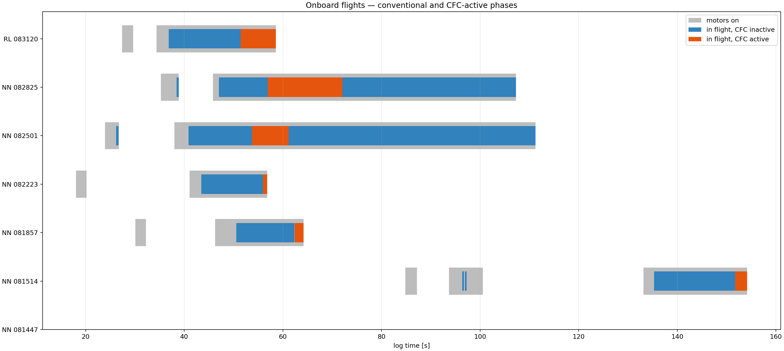
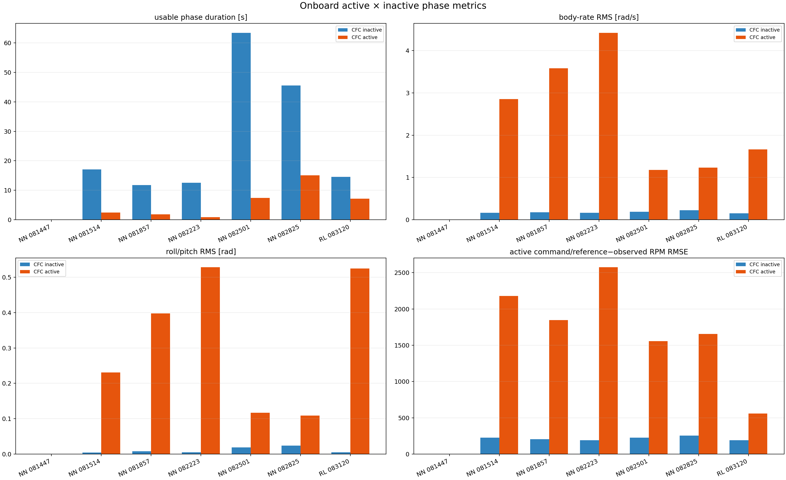
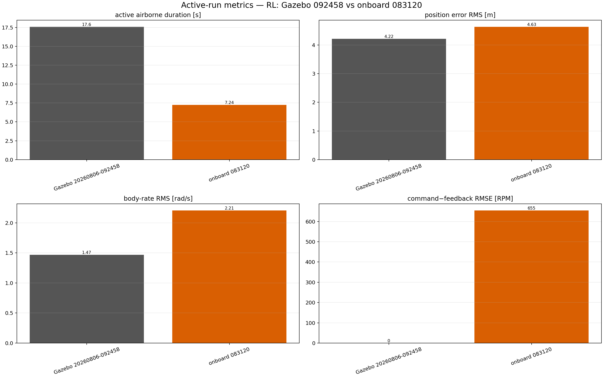
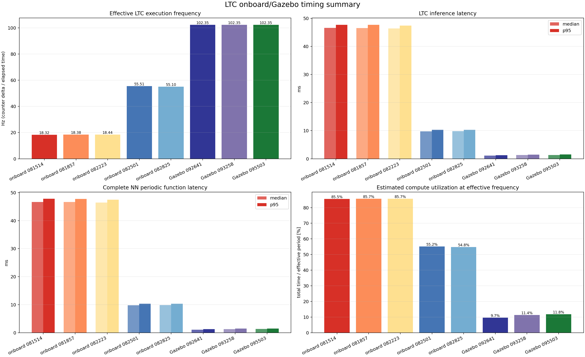

Full-log plots preserve controller-inactive operation; NN/RL active pages are aligned to the controller interval and limited at detected ground contact where applicable. The file at 08:14:47 contains no motor-on or controller-active samples and is retained as a logger/no-flight reference.
| Log | Controller | Full plots | Active plots | Usable active duration |
|---|---|---|---|---|
| 08:14:47 | NN | open | not activated | 0 s |
| 08:15:14 | NN | open | open | 3.14 s (ground contact) |
| 08:18:57 | NN | open | open | 1.83 s (ground contact) |
| 08:22:23 | NN | open | open | 1.01 s (ground contact) |
| 08:25:01 | NN | open | open | 7.39 s |
| 08:28:25 | NN | open | open | 15.08 s |
| 08:31:20 | RL | open | open | 7.24 s |
Open active × inactive onboard report


| Log | Controller | Full plots | Active plots |
|---|---|---|---|
| 09:24:58 | RL | open | open |
| 09:26:41 | NN | open | open |
| 09:32:58 | NN | open | open |


Open inference-latency and effective-frequency report
